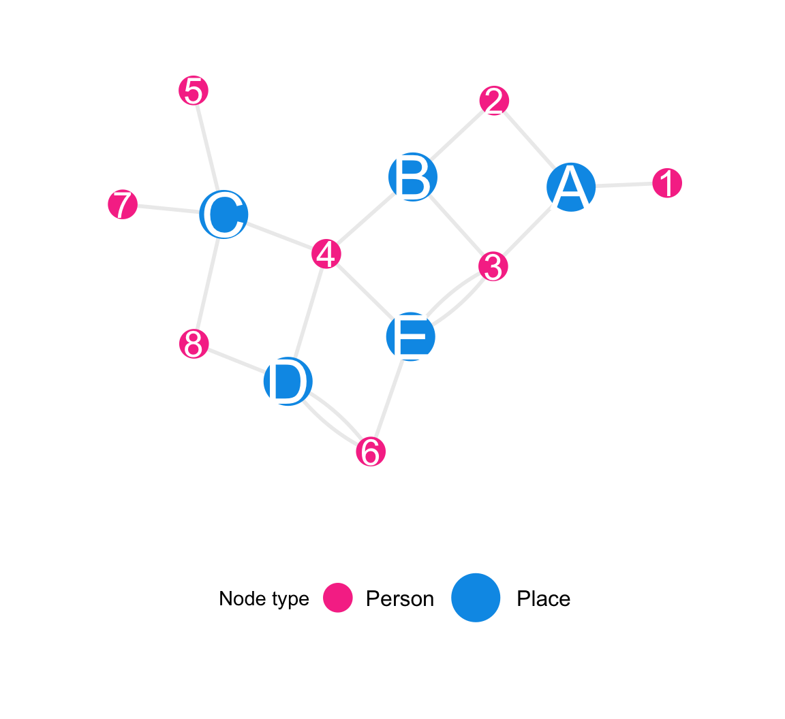

Code
plot_icon(icon_name = "devil", color = "light_purple", shape = 16, alpha = 0, size = 100, image_size = 0.2)
We describe the main data objects of the MPX NYC study – the Person-place graph, the Person graph and the Place graph – as well as the statistics we used to analyze them.
Lead author: Keletso Makofane, MPH, PhD. Editor: Nicholas Diamond, MPH. (Published: June 2025).
Acknowledgements: The analytic framework for this project developed over an extended period of time, beginning during my PhD dissertation at Harvard University under the supervision of Lisa Berkman, Eric Tchetgen Tchetgen, and a former mentor). In particular, the analysis borrows from the central paper in my dissertation, which shows how the wealth of non-coresident extended family members is protective against mortality…(continued at bottom of page)
plot_icon(icon_name = "devil", color = "light_purple", shape = 16, alpha = 0, size = 100, image_size = 0.2)
make_example_network_data("bipartite") |>
plot_example_bipartite_network() +
scale_color_mpxnyc(name = "Node type", option = "dark") +
ggplot2::labs(fill = "Node type") +
ggplot2::scale_size_manual(name = "Node type", values = c(7,10)) +
theme_mpxnyc_blank(
plot.margin = ggplot2::margin(0,0,0,0),
legend.position = "bottom"
) 
The RESPND-MI/MPX NYC person-place data graph contains all study data. We define it as an ordered triple with the first entry a set of node labels \(\mathscr{N}\), the second, a set of edges \(\mathscr{E}\), and the third, a function associating each node with node attributes and each edge with edge attributes.
\[ \mathscr{G}(\mathscr{N}, \mathscr{E}, d(.)) \]
There are two non-overlapping types of nodes: community districts \(\mathscr{N}_C\) and survey participants \(\mathscr{N}_P\). Together these two groups account for all the nodes in the study. \[ \mathscr{N} = \mathscr{N}_P \cup \mathscr{N}_C,\mathscr{N}_P \cap \mathscr{N}_C = \emptyset \] Each edge encodes a relation between a person and a place. For instance, a participant might have the relation of “contains home” with a particular community district, and also have the relation of “contains gathering” with the same community district. It is possible for one person to have multiple relations with one place. The set of edges is given by \[ \mathscr{E}=\{(x, a,b) : x \in \mathbf{Z}_+, a \in \mathscr{N}_P, b \in \mathscr{N}_C \text{ and } a \sim b\} \] The elements of this set are ordered triples whose entries are an integer-valued index, the origin node and the terminal node for each edge.
Each node in the data graph is associated with attributes we collectively call the node data. The node data is a set of vectors of length equal to the number of nodes. Where \(S_t\) is a set the contains all the possible values of the entries of the \(t^{th}\) vector in the set.
\[ d(\mathscr{N}) = \{\mathbf{v}_t \in (S_t)^{|\mathscr{N}|} : t \in [1:K], K \in \mathbf{Z}_+\} \]
Similarly, the edge data are a collection of vectors of length equal to the number of edges.
\[ d(\mathscr{E}) = \{\mathbf{v}_t \in (S_t)^{|\mathscr{E}|} : t \in [1:Q], Q \in \mathbf{Z}_+\} \]
We define \(\psi(i,j)\) as the number of relations between person \(i\) and place \(j\) in the person-place graph
\[ \psi(i,j) = |\{(x,i,j) \in \mathscr{E}\} | \]
Spatial reach of person \(i\) is the number of relations person node \(i\) has with place nodes in the person-place graph.
\[
R_{i}^C = \sum_{\begin{aligned} j &\in \mathscr{N}_C \end{aligned}}{\psi (i,j)}
\]
Spatial catchment of place \(j\) via subgroup \(A\) is defined as the strength of connection between place node \(j\) and other place nodes in the graph when we consider their shared relations with person nodes in subgroup \(A\). Strength of connection between two places \(j\) and \(k\) is defined as the number of relations place nodes \(j\) and \(k\) have with common person nodes which belong to subset \(A\).
The spatial catchment of place \(j\) is defined as \(r_{i\rightarrow \mathscr{N}_P} = r_{i}\)
\[ r_{j\rightarrow A} = \sum_{i \in \mathscr{N}_C} \sum_{k \in A}{\psi(k,i)\psi(k,j)} \\ \]
We define preference of group A for group B (for \(A, B \subset \mathscr{N}_p\)) as the average proportion of alters from group B among egos from group
\[ \Phi(A,B) = \frac{1}{|A|}\sum_{i \in A}{\frac{ R_{i \rightarrow B}}{R_i}} \]
The prevalence of group B is the size of the group divided by the total number of participants.
\[ \frac{|B|}{|\mathscr{N}_p|} \]
The spatial mixing coefficient from A to B quantifies the degree to which egos in group A preferentially live in or attend gatherings in community districts they are likely to encounter members of group B. It is defined as the ratio of preference to prevalence minus one.
\[ \phi(A,B) = \frac{|\mathscr{N}_p|}{|B|} \Phi(A,B) - 1 \]
Proportion in largest connected component: In a given network, a connected component is a subset of nodes such that each node in the subset is reachable from any other node in the subset, and such that there are no nodes outside the subset which are reachable from a node inside it. By reachable, we mean possible to reach by tracing a path from one node to another over existing network ties. Say the size of the \(k^{th}\) connected component is \(C_k\). The proportion in the largest connected component is given by: \[ \theta_p = \frac{\max_k{C_k}}{|\mathscr{N}_p|} \]
The movement matrix is a square matrix whose \(kl^{th}\) entry, \(m(k,l)\), is defined as the count of outings from home in community district \(k\) to a gathering in community district \(l\). Say \(d^H(i)\) is the home community district of participant \(i\). \[ m(k,l) = \sum_{\begin{aligned}i \in \mathscr{N}_P \\ d^H(i) = k \end{aligned}} \psi (i,l) \]
The spatial concentration proportion \(c(k)\) quantifies the degree to which a community district is over-represented among destination community districts compared to home districts in the movement matrix. It is the difference of the margins of the movement matrix. \[ c(k) = \frac{\sum_l{m(l,k)} - \sum_k{m(l,k)}}{\sum_{l,k}{m(l,k)}} \]
Acknowledgements: The analytic framework for this project developed over an extended period of time, beginning during my PhD dissertation at Harvard University under the supervision of Lisa Berkman, Eric Tchetgen Tchetgen, and a former mentor). In particular, the analysis borrows from the central paper in my dissertation, which shows how the wealth of non-coresident extended family members is protective against mortality.
This work was part of U.S. government-funded research conducted in South Africa through the HAALSA study, which has since been defunded by the Trump administration. It is path-breaking because it shows an approach to using a large scale (over 100,000 people observed over three decades) dataset as a family network. There are many more datasets that could be analyzed using these methods. Any investigator who ever hosted a study at the Agincourt surveillance site in the north-east of South Africa, for instance, can use these methods to interpret their own data in light of family networks. It has the potential to illustrate the value of deep collaboration between U.S. and South African researchers. It is also of pedagogical value. I wrote the appendices of my dissertation in the same style as these appendices – with students and teachers of epidemiology in mind.
Unfortunately, my PhD dissertation paper is a hostage of the American Journal of Epidemiology’s former editor-in-chief, Ichiro Kawachi, who is a colleague of my former mentor.
After taking some time away from work to recover from the social violence I experienced at the hands of my former mentor, I was surprised to find that the edits that had held up publication of my dissertation paper (with implications for my ability to get an academic job) were minor copy edits. The “technical review” itself, which is misleadingly labelled, was riddled with errors, by the admission of the handling editor. Many tedious things happened after that, but the result of them is that the editors of the American Journal of Epidemiology have the final version of my manuscript, which I copy edited myself after arranging for the journal to receive thousands of dollars in publication fees… after spending years conducting the research and months responding to peer review. I submitted the manuscript by email after the handling editor agreed to receive it by email.
Mysteriously, the manuscript remains unpublished. Ichiro Kawachi remains a member of the editorial board of the Journal. The Journal is associated with the Society of Epidemiologic Research, whose meetings were an important venue for the development of the SSNAC framework.
For publication-ready copies of the paper referenced below, which was accepted on 19 October 2023, please contact the editorial board of the American Journal of Epidemiology directly. Please share your correspondence with members of the Society of Epidemiologic Research and any South African and U.S. researchers you think might have an interest in seeing the work in print.
Makofane, K., Tchetgen Tchetgen, E. J., Bassett, M. T., Berkman, L. F. (Accepted 2023, final manuscript submitted January 2025). Networked wealth and mortality in the Agincourt Health and Demographic Surveillance System 2009 – 2018. American Journal of Epidemiology.
Social reach
Social reach of person \(i\) among subgroup \(A\) is the number of person nodes in set \(A \subset \mathscr{N}_P\) that are connected to person node \(i\) through shared places. i.e. either because both nodes have a residence or gathering in at least one common community district. \[ R_{i\rightarrow A}^P = \sum_{\begin{aligned} j &\in A \end{aligned}}{\sum_{k \in \mathscr{N}_C}{\psi(i,k)\psi(j,k)} } \]
The social reach of person \(i\) is defined as \(R_{i\rightarrow \mathscr{N}_P} = R_{i}\)
The social reach of person \(i\) is defined as \(R_{i\rightarrow \mathscr{N}_P} = R_{i}\)